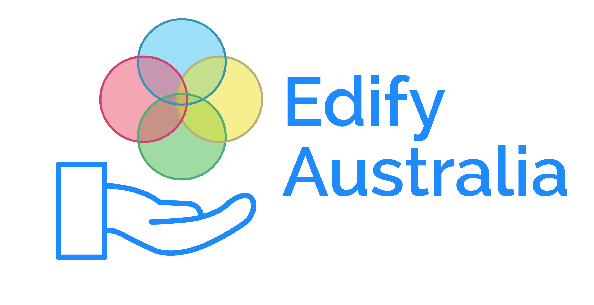
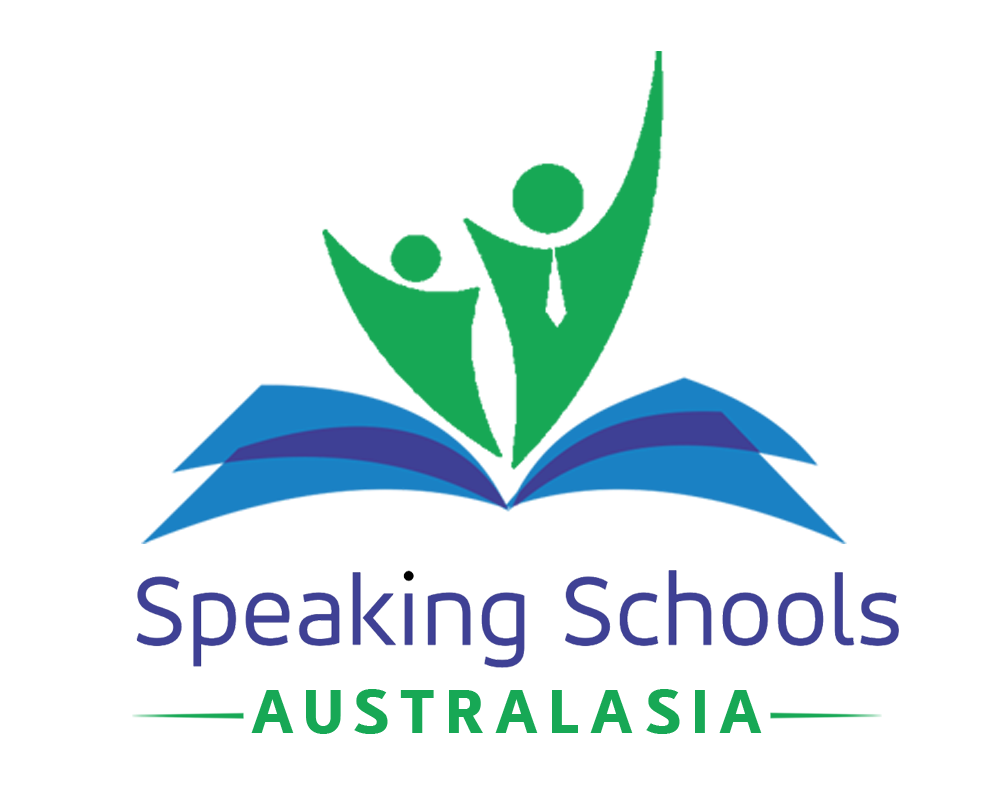
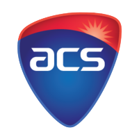

Education lies at the heart of all societies, and in fact, defines how collectives operate and work amongst each other. Without education, we fail to work together and understand each other, especially in more diverse societies where its members come from all walks of life. In an ideal system, teaching and education are spread equally amongst all, and the spirit of education is to assist its students in learning fairly and to their conducive benefits.
While such systems are replicable in northern Europe and have seen successful outcomes, both in standardised and subjective measures, Australia's system frequently fails not only to maintain equity in its approach but also fails to achieve the results it holds paramount in the eyes of teachers and students. Changing educational funding models in the 1990s set the tone for decades of educational inequality, with Australia becoming having some of the highest gaps between our excelling and trailing students out of all OECD nations.
Hence, the imperative exists to provide educational solutions catered to the needs of students from lower Socio-Economic/Educational Standards, as these students are not only the most likely to fall behind but also the least likely to be supported. By motivating young people to break cycles of economic and social repression, especially those from at-risk backgrounds (suffering from poor mental health, migrant families, queer youth etc.), society can shift towards creating a 'fairer go' for all, a principle at the heart of Australian spirit.
As a STEM Professional with a strong communications background, I see it within my role to introduce younger ages to the opportunities which may arise out of alternate pathways, and how students can combine many non-academic skills to create channels of their own. Whether this is through classes, workshops, mentoring sessions or more significant events, I use my unique position within the education system to keep inspiring and influencing students in primary and secondary education.
Associated Organisations & Experiences
|  | Edify Australia is a not for profit educational startup, founded by Joe Vu, Rowena Tran, Andrew Ngyuen & Shoryu Das-Zaman. They aim to provide goal-oriented mentoring for students in the middle of high school, a very transitional moment in their development. Motivated by the need to see better quality education in our schools, the need to reduce educational inequality and the need to more adequately prepare teenagers for an increasingly turbulent future, Edify's programs have endured hundreds of hours of crafting and refining. Their second pilot program will be running in Hoxton Park High School in Early 2020. |
| Masters Academy specialises in coaching their students for debating and public speaking, in both social and more competitive formats. Their coaching involves teaching relevant skills in regards to verbal communication, but also stretches students by requiring them to boost their creativity, memory retention and knowledge of current/world affairs. Teachers for primarily early secondary students frequently try to push them out of their boundaries and comfort zones and grow them as individuals, while learning about communication along the way. | |
|  | Speaking Schools Australasia, much like Masters Academy, specialises in teaching communication skills to a variety of youth groups. Typically in a non-school, out of classroom format, the younger students of SSA go through more of a grassroots learning process to familiarise themselves with the essentials of public speaking and debating. Coaches usually deliver classes within a holiday program, with more enjoyable and engaging activities than typical holiday educational programs. |
|  | The ACS Foundation, sponsored by technology industry partners, including WiseTech Global, Microsoft & Apple, acts as a representative of technology in Australia. They prioritise educating current school and university students about the variety of opportunities within tech. Various events, such as the Big Day In, (and its junior edition) ranging from lecture style to being heavily activity-based, encourage students from all walks to follow STEM careers. |
| Engineers Without Borders is an international movement, prompting Engineers to use their STEM skills outside of their typical projects, instead, finding applications which benefit regular communities in underprivileged areas. The UTS Chapter frequently runs school outreach programs, where student engineers go out to high schools to promote STEM (particularly Engineering) as a career path. The chapter runs such programs by administering engineering workshops, getting students hands-on with the skills that are also applied by professionals in the field. |